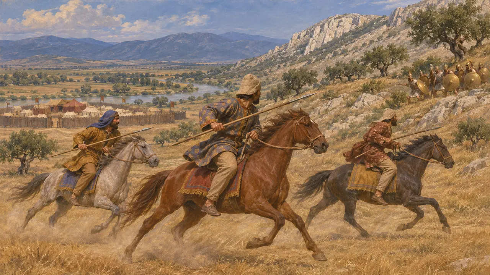
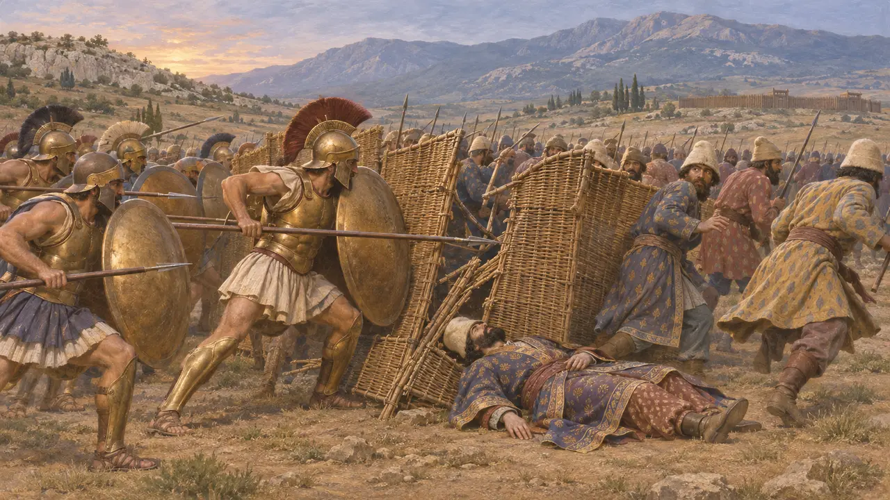
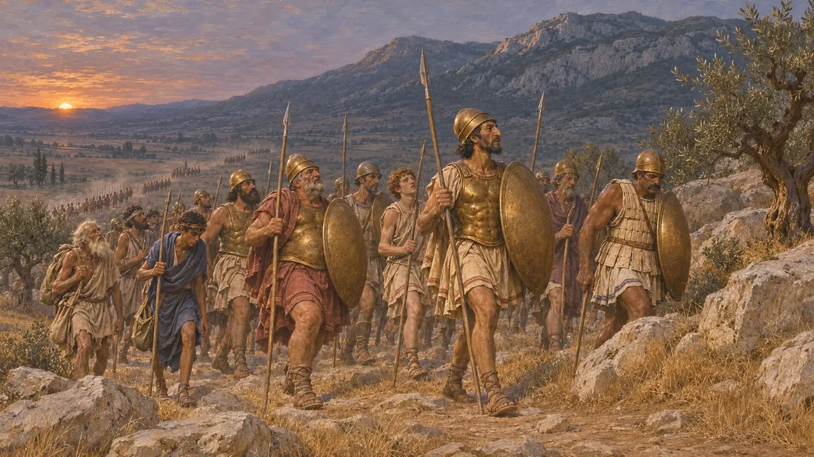
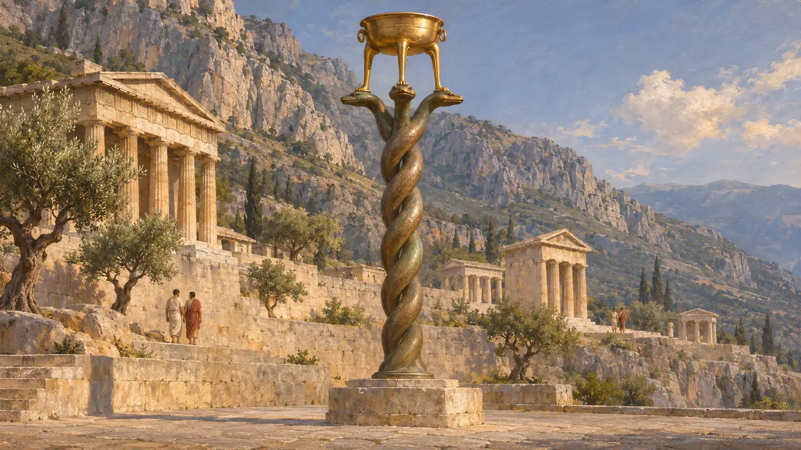
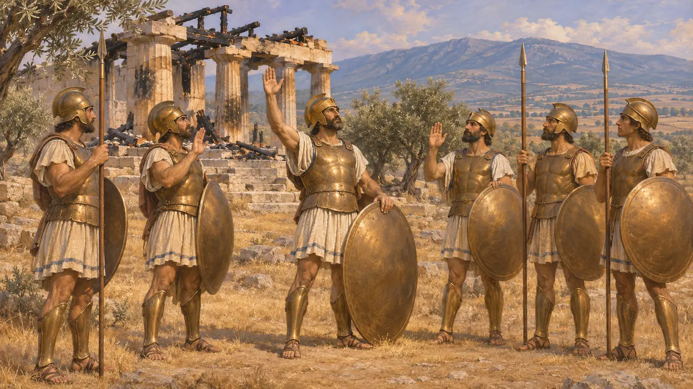

Enzyklopädie › Schlachten und Ereignisse

Die Schlacht von Plataiai
Griechischer Sieg über das Heer des Mardonios bei Plataiai in Böotien, 479 v. Chr.
Im Spiel: Level 11: Das Finale
Die Schlacht von Plataiai, im Sommer 479 in Böotien geschlagen, beendete den Einfall des Xerxes in Griechenland. Ein griechisches Heer unter dem spartanischen Regenten Pausanias besiegte die Streitmacht, die Mardonios nach Salamis in Griechenland zurückgelassen hatte, und Mardonios fiel im Kampf. Persien schickte nie wieder ein Heer ins griechische Kernland.
Im Spiel: Das Plataiai-Level ist um diese Schlacht herum aufgebaut: Tage des Scharmützelns, die Verunreinigung von Gargaphia, der Angriff des Mardonios, sein Tod und die Erstürmung seiner Festung. Die Chronik folgt Herodot, lässt aber seine Schätzung von 50.000 griechischen Verbündeten der Perser aus.

Mardonios in Böotien
Antiker BerichtHerodot berichtet, Mardonios habe in Thessalien überwintert, 479 Athen zurückerobert und sich dann nach Böotien zurückgezogen, wo das offene Gelände seiner Reiterei entgegenkam, und am Asopos eine hölzerne Festung errichtet. Die Griechen lagerten an den Hängen des Kithairon. Seine Reiter setzten ihnen tagelang zu, und ihr Befehlshaber Masistios fiel in einem Gefecht. Anschließend schnitten sie griechische Nachschubkolonnen in den Pässen ab und verunreinigten schließlich die Quelle von Gargaphia.
Herodotus 8.113; 9.1-3, 9.13-25, 9.39, 9.49-50

Der Rückzug und die Schlacht
Antiker BerichtDa das Wasser knapp war, versuchten die Griechen, bei Nacht auf neues Gelände näher bei Plataiai zu ziehen, und Herodot beschreibt den Marsch als verworren. Im Morgengrauen griff Mardonios die Spartaner und Tegeaten an. Die Perser kämpften hinter einer Wand aus Flechtschilden, und als der Spartaner Arimnestos Mardonios tötete, brachen seine Männer zusammen. Die Athener schlugen die Böotier, und die Griechen stürmten die Festung.
Herodotus 9.51-70

Zahlen, Verluste und der Nachtmarsch
UmstrittenHerodot nennt 110.000 Griechen, 300.000 für das Heer des Königs und vielleicht 50.000 griechische Verbündete der Perser. Historiker akzeptieren seine griechischen Zahlen weitgehend, setzen aber die Streitmacht des Mardonios auf vielleicht 60.000 bis 120.000 an. Seine Behauptung, kaum 3.000 hätten überlebt, abgesehen von 40.000, die Artabazos wegführte, ist nicht glaubhaft, und seine 159 gefallenen Griechen wirken zu wenige. Historiker debattieren auch, ob der nächtliche Rückzug geplant war oder beinahe eine Flucht.
Herodotus 9.28-32, 9.66, 9.70; J. F. Lazenby, The Defence of Greece 490-479 BC, 1993

Die Schlangensäule und das persische Schweigen
Zeitgenössisch belegtHerodot berichtet, die Griechen hätten ein Zehntel der Beute für einen goldenen Dreifuß in Delphi beiseitegelegt, der auf einer Bronzesäule aus drei gewundenen Schlangen stand. Der Bronzeschaft ist erhalten, auf seinen Windungen sind die Namen von 31 griechischen Staaten eingraviert, die an dem Krieg teilnahmen, und er steht heute im Hippodrom von Istanbul. Keine persische Inschrift und keine Tafel erwähnt die Schlacht, sodass sie fast nur von griechischer Seite bekannt ist.
Herodotus 9.81; Thucydides 1.132; R. Meiggs and D. Lewis, A Selection of Greek Historical Inscriptions, 1969, no. 27

Der Eid von Plataiai
Spätere LegendeDer athenische Redner Lykurgos im 4. Jahrhundert und viel später Diodor zitierten einen Eid, den die Griechen vor der Schlacht angeblich geschworen hatten: bis in den Tod zu kämpfen und die von den Persern verbrannten Tempel als Mahnmal in Trümmern zu belassen. Eine Fassung ohne die Tempelklausel ist auf einer Stele des 4. Jahrhunderts aus Acharnai eingemeißelt. Schon Theopomp nannte ihn eine athenische Erfindung, und Historiker streiten bis heute darüber, ob irgendetwas daran echt ist.
Lycurgus, Against Leocrates 81; Diodorus 11.29; Theopompus, FGrHist 115 F 153
Quellen
- Herodotus 9.1-89
- Plutarch, Aristides
- R. Meiggs and D. Lewis, A Selection of Greek Historical Inscriptions, 1969
- J. F. Lazenby, The Defence of Greece 490-479 BC, 1993
- P. Green, The Greco-Persian Wars, 1996
- P. Briant, From Cyrus to Alexander, 2002